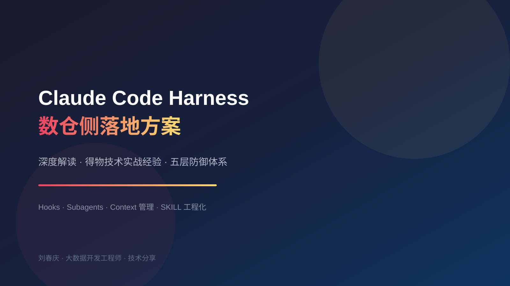

本文深度解读得物技术团队公开分享的《Claude Code Harness 工程：数仓侧落地方案》。原文分享了一个非常现实的命题：当 AI Coding 工具（Claude Code）真正进入数仓开发流水线后，如何系统性解决"AI 失忆、规范失控、context 膨胀"三大结构性痛点。
我在原文基础上做了大量展开：补充了背景原理、每一层防御机制的可运行配置、以及作为数仓开发者的落地思考。希望这篇文章能帮你把"随手问 AI"升级为"把能力封装进研发流水线"。
得物离线数仓各小组已基本完成 AI Coding 工具的覆盖，主力工具为 Claude Code，辅以数据平台的 IDE 插件。在应对重复性工作（生成标准建表 DDL、常见 ETL 模板、重复性报表 SQL）时，效率提升非常明显。
context compact（上下文压缩）机制的系统性限制：当对话 token 接近上限（约 95%）时，历史内容被自动压缩为摘要，临时口头说的约束全部丢失。解决思路来自一条反复验证的结论：规范执行是人的短板、AI 的长板；业务判断是 AI 的短板、人的长板。Harness 工程的目标，就是把"执行层"的不稳定因素系统性消掉：
在 Claude Code 的 update-config skill 描述中有一句关键的话："Automated behaviors require hooks configured in settings.json — the harness executes these, not Claude"。
这句话揭示了本质：Harness = Claude Code 的宿主运行框架，即 Claude Code 客户端本身这个"工具链容器"。它负责：
context window 生命周期（含 auto-compact）；| 维度 | LLM（Claude） | Harness（宿主框架） |
|---|---|---|
| 行为来源 | 推理 / 概率 | 配置 / 确定 |
| 适合任务 | 语义理解、方案设计、代码生成 | 规范校验、危险拦截、生命周期管理 |
| 是否可预测 | 受 context 影响，会"失忆" | 100% 按配置执行，从不忘记 |
每次数仓开发 context 接近满时，auto-compact 触发（默认 95% 时触发），会把整个对话历史替换为一份摘要，token 缩减到原来的约 12%。也就是说，88% 的历史细节被压缩丢失。
数仓场景最痛的点：
一句话总结：compact 丢的不是"知识"，而是"这次任务的状态与临时约束"。而这两样恰恰是数仓开发中最不能丢的东西。
机制：项目根目录 .claude/CLAUDE.md 每次 compact 后从磁盘重新注入，是最可靠的持久化位置。将当前迭代的关键信息写入：
# 当前迭代状态（每次迭代手动更新） ## 正在开发 - 表：db_a.dws_table_a 版本：V1.0 node_id：1000000001 状态：ETL开发阶段（Step 3/8） ## 本次迭代约束 - 禁止修改：dwd_table_b（已上线，只读） - 分区字段：partition_dt（格式 yyyyMMdd，不是 dt） - amount 字段单位：千元（不是元） ## 数仓全局规范 - 建表：分区字段必须是 partition_dt string - 禁止：SELECT *，UPDATE/DELETE 无 WHERE - 金额字段用 DECIMAL(20,4)，不用 DOUBLE - INSERT 必须带 PARTITION 子句
操作规则：进入新迭代时更新"正在开发"和"本次迭代约束"两节；上线后清空"本次迭代约束"；全局规范长期保留，控制在 100 行以内。这是零成本的第一道防线，立即可用。
机制：Claude 自动将跨会话发现写入 ~/.claude/projects/<project>/memory/MEMORY.md，每次 compact 后重新注入。数仓场景下主动触发 Claude 写记忆的时机：
Claude 会自动写入 MEMORY.md，下次会话或 compact 后自动恢复。这一层解决的是跨会话的踩坑记忆，与第一层的当次迭代约束互补。
这是解决"每次写完 SQL 自动检查"的关键机制。配置文件结构：
数仓项目根目录/
└── .claude/
├── settings.json ← hooks 在这里配置
├── CLAUDE.md ← 数仓规范上下文
└── hooks/
├── validate_sql.sh ← SQL 规范自动检查
├── block_dangerous_ddl.sh ← 危险 DDL 拦截
└── inject_context.sh ← compact 后重注入上下文
settings.json 完整配置：
{
"hooks": {
"PostToolUse": [
{ "matcher": "Write|Edit", "hooks": [
{ "type": "command", "command": "\"$CLAUDE_PROJECT_DIR\"/.claude/hooks/validate_sql.sh",
"timeout": 60, "statusMessage": "检查 SQL 规范..." }
]}
],
"PreToolUse": [
{ "matcher": "Bash", "hooks": [
{ "type": "command", "command": "\"$CLAUDE_PROJECT_DIR\"/.claude/hooks/block_dangerous_ddl.sh" }
]}
],
"SessionStart": [
{ "matcher": "compact", "hooks": [
{ "type": "command", "command": "cat \"$CLAUDE_PROJECT_DIR\"/.claude/context/dw_conventions.md",
"statusMessage": "重注入数仓规范..." }
]}
],
"Stop": [
{ "hooks": [
{ "type": "prompt",
"prompt": "检查用户要求的所有任务是否都已完成。如果还有未完成项，返回提示但不要重新开始。检查 stop_hook_active 是否为 true，如是则直接 exit。",
"model": "claude-haiku-4-5-20251001" }
]}
]
}
}
.claude/hooks/validate_sql.sh（SQL 规范自动检查）：
#!/bin/bash
INPUT=$(cat)
FILE_PATH=$(echo "$INPUT" | python3 -c "import sys,json; d=json.load(sys.stdin); print(d.get('tool_input',{}).get('file_path',''))" 2>/dev/null)
# 只处理 .sql 文件
[[ "$FILE_PATH" != *.sql ]] && exit 0
[[ -z "$FILE_PATH" ]] && exit 0
SQL=$(cat "$FILE_PATH" 2>/dev/null)
[[ -z "$SQL" ]] && exit 0
ERRORS=()
# 规范1：禁止 SELECT *
echo "$SQL" | grep -iqE 'SELECT\s+\*' && ERRORS+=("CRITICAL: 发现 SELECT *，必须明确列名")
# 规范2：INSERT 必须带 PARTITION
if echo "$SQL" | grep -iqE 'INSERT\s+(INTO|OVERWRITE)'; then
echo "$SQL" | grep -iqE 'PARTITION\s*\(' || ERRORS+=("CRITICAL: INSERT 缺少 PARTITION 子句")
fi
# 规范3：DOUBLE 类型金额
echo "$SQL" | grep -iqE '\bDOUBLE\b' && ERRORS+=("WARNING: 金额字段建议用 DECIMAL(20,4)，不用 DOUBLE")
# 规范4：UPDATE/DELETE 必须有 WHERE
if echo "$SQL" | grep -iqE '\b(UPDATE|DELETE)\b'; then
echo "$SQL" | grep -iqE '\bWHERE\b' || ERRORS+=("CRITICAL: UPDATE/DELETE 缺少 WHERE 条件")
fi
if [ ${ERRORS[@]} -gt 0 ]; then
echo "=== SQL 规范检查失败：$FILE_PATH ===" >&2
for err in "${ERRORS[@]}"; do
echo " $err" >&2
done
exit 2
fi
echo "SQL 规范检查通过: $(basename $FILE_PATH)" >&2
exit 0
.claude/hooks/block_dangerous_ddl.sh（危险 DDL 拦截）：
#!/bin/bash
INPUT=$(cat)
CMD=$(echo "$INPUT" | python3 -c "import sys,json; d=json.load(sys.stdin); print(d.get('tool_input',{}).get('command',''))" 2>/dev/null)
# 拦截生产表 DROP/TRUNCATE（放行 _dev/_test/_stg 后缀）
if echo "$CMD" | grep -iqE '\b(DROP\s+TABLE|TRUNCATE\s+TABLE)\b'; then
if ! echo "$CMD" | grep -qiE '(_dev|_test|_stg)\b'; then
echo "BLOCKED: 检测到生产表 DROP/TRUNCATE 操作，请确认表名是否正确" >&2
exit 2
fi
fi
exit 0
关键陷阱：阻断必须用 exit 2，用 exit 1 不会阻止 Claude 继续执行。这是 hook 通信协议中最容易踩的坑。
核心原则：把"高 token 消耗但结果只需要摘要"的操作放到 subagent 的独立 context 中执行。
数仓场景适合下放 subagent 的操作：
sql-validator（大量验证日志不污染主对话）；dw-explorer（多表 DDL、上下游血缘查询）；data-quality-checker（23 条 SQL 执行结果）；data-comparator（两表大样本对比）。.claude/agents/dw-explorer.md 示例（防止血缘查询撑爆主 context）：
--- name: dw-explorer description: 数仓结构探索 agent。当需要大量读取表结构、DDL、字段信息、血缘关系时自动调用，避免大量文件内容污染主 context。只读，不修改任何文件。 tools: Read, Glob, Grep, Bash model: haiku permissionMode: dontAsk --- 你是数仓探索专家，只读操作。当被调用时： 1. 读取指定表的 DDL、字段信息、分区策略 2. 分析上下游血缘（一层） 3. 识别关键字段口径（金额、日期、状态类字段） 输出：不超过 80 行的结构化摘要，包含： - 表基本信息（层级、粒度、分区策略） - 核心字段定义（含口径说明） - 上下游血缘（只列表名，不展开内容） - 发现的特殊口径或踩坑点
在主对话中自然触发：用 dw-explorer 分析 db_a.dwd_table_a 的结构，或强制指定：@"sql-validator (agent)" 验证 path/to/insert.sql。
当前问题：每次调用 SKILL 文件（01~08.md），内容全部加载进主 context（约 10KB），加速 compact 触发。
改造方向：
--- # .claude/rules/etl-rules.md paths: - "**/*insert*.sql" - "**/*_di.sql" - "**/*_df.sql" --- # ETL 开发规范（按文件路径自动加载） - 必须有 partition_dt 分区 - INSERT OVERWRITE 前检查分区是否已存在 - 不允许跨库 JOIN
SKILL 文件保持现状，但改变调用方式：不要在主对话中直接触发，而是启动 subagent 读 SKILL 文件执行，主对话只接收最终产出的 SQL 文件路径。
整个方案的核心逻辑是职责分层：不同类型的工作交给最合适的机制去做，而不是全部压在 Claude 的推理循环里。
| 层级 | 解决什么问题 | 核心机制 | 预期效果 |
|---|---|---|---|
| 持久化层（CLAUDE.md + Memory） | "失忆"问题 | compact 后从磁盘重新注入 | 临时口头约束不再丢失 |
| Harness 层（Hooks） | "规范靠记忆"问题 | PostToolUse 每次写 .sql 后确定性触发；违规 exit 2 强制阻断 | 规范遵守率 70%~80% → 95%+ |
| Subagent 层 | "context 被撑满"问题 | 血缘/自测/比对放独立 context，主会话只收摘要 | compact 触发频率降低 50%~70% |
三层机制分工明确，互不干扰：Hooks 处理"写动作触发的规范检查"；Subagent 处理"读操作的 context 隔离"；CLAUDE.md 处理"跨会话状态持久化"。
为了配合这套架构落地，数仓的研发流程可以拆解为 8 个步骤，按"对 context 的影响"分成两类：
这种分工不是把步骤拆开独立执行，而是在同一个工作流里，让每个步骤以最合适的方式运行：context 压力小的留在主会话保持流畅，context 压力大的通过 subagent 隔离保持干净，规范检查通过 hook 自动执行不需要人工干预。
数仓 8 步 SKILL 规范（需求分析→技术设计→ETL→自测→数据比对→SR 导入→性能优化→SLA/DQC）天然对应 Harness 的三层机制。核心思路是：SKILL 文件不变，改变调用方式——主对话只读规范结论，实际执行由 subagent 或 hook 完成。
推荐提示词：
用 dw-explorer subagent 先读取上游表结构（只返回摘要），然后按需求分析规范生成： 1. 需求摘要（≤5行） 2. 表字段口径草稿 3. 待确认问题清单（按优先级排序） 需求文档 URL：[粘贴PRD链接]
Hook 配合：SessionStart 注入当前迭代约束（版本号/表名/禁止修改的表）。
推荐提示词：
基于上一步确认的需求，按 OneData 规范完成技术设计： 表名：[按 层级_域_主题_粒度_周期 格式命名] 粒度：[描述] 分区：partition_dt string（格式 yyyyMMdd） 禁止：任何与上游不一致的字段命名 输出 OneData 建模说明，不超过 60 行
CLAUDE.md 写入（设计完成后手动更新）：
## 当前迭代技术设计决策 - 表名：db_a.dws_table_a - 主键：order_no + partition_dt - 特殊约束：amount 字段继承上游千元单位，不做转换
推荐提示词：
按 ETL 开发规范生成建表 DDL + Insert SQL： - 建表文件：ddl_[表名].sql - 插入文件：insert_[表名].sql - 要求：INSERT 用 OVERWRITE 模式，PARTITION 子句必须包含 partition_dt - 金额字段：DECIMAL(20,4)，单位继承上游（千元） 生成完毕后，用 sql-validator subagent 验证两个文件
Hook 自动执行（无需手动触发）：每次写入 .sql 文件 → PostToolUse hook 自动运行规范检查。若发现 SELECT * 或缺少 PARTITION → 返回 exit 2，Claude 收到错误自动修正。
推荐提示词（防止自测结果撑爆主 context）：
用 data-quality-checker subagent 对 [表名] 执行 23 项标准自测，bizdate = [日期] 补充口径约束：[如"is_perform=1 只取履约订单"] 只返回：PASS/FAIL 汇总 + FAIL 项详情（≤50行），不返回原始 SQL 执行结果
效果：23 条 SQL 的执行结果全在 subagent context 里，主对话只收到一份摘要报告。
推荐提示词：
用 data-comparator subagent 对比： 新表：[新表名] partition_dt = [日期] 参考表：[旧表名/线上表] 比对字段：[核心金额字段列表] 容差：≤ 0.01%（金额类） 只返回：差异超过容差的字段列表 + 差值，不返回全量对比数据
推荐提示词（自动生成最优数据库建表参数）：
用 dw-sr SKILL 生成建表任务，先查以下表的 DDL 和一层上下游血缘（只返回摘要）： - 源表：[ODPS表名] - 目标表：[SR表名] 然后基于 DDL 摘要，分析当前 SR 同步任务的配置风险： 1. 字段类型是否有精度丢失风险（DECIMAL/DOUBLE → DECIMAL(38,18)） 2. Key 字段选择是否合理（重复率是否过高导致 DUPLICATE KEY 膨胀） 3. 分区数量是否合理（partition_live_number 与下游查询窗口是否匹配） 4. DISTRIBUTED BY HASH 的 bucket 数与数据量是否匹配 5. 是否有 DATETIME 字段在 SR 侧用了 VARCHAR 存储（会导致时间过滤走全表扫描） 输出同步任务配置建议（按风险高低排序），不超过 20 行。 每条格式：[风险等级 高/中/低] 问题描述 → 建议修改方式
推荐提示词（防止血缘查询撑爆主 context）：
用 dw-explorer subagent 先查 [表名] 的一层上下游血缘和 DDL（只返回摘要），然后分析当前 Insert SQL 的性能瓶颈： 1. 是否有全表扫描 2. 是否有笛卡尔积风险 3. 是否可以用 MAP JOIN 替代 HASH JOIN 输出优化建议（按收益排序），不超过 30 行
推荐提示词：
按 SLA/DQC 规范为 [表名] 生成 9 类 DQC 规则： 完整性：主键非空、分区数据量 准确性：核心金额字段与上游比对（容差 0.01%） 一致性：is_perform 与 perform_flag 联动逻辑 时效性：产出时间 SLA ≤ 次日 8:00 输出 DQC 配置 JSON，可直接使用
当前问题：触发 SKILL 时，SKILL 文件全文（约 10KB）加载进主 context，加速 compact。
核心原则：主对话只接收决策级信息（PASS/FAIL、差异字段、优化方案），不接收过程数据（SQL 执行结果、原始血缘列表、完整 DDL 内容）。
以 /dw-etl 为例，一条命令封装了什么：
ddl_[表名].sql（ODPS 建表）+ insert_[表名].sql（Insert SQL）+ ddl_sr_[表名].sql（SR 建表）。在数仓项目目录下创建 .claude/CLAUDE.md，写入当前迭代状态。每次新迭代开始时更新"正在开发"和"本次迭代约束"两节，上线后清空约束节。全局规范永久保留，控制在 100 行以内。
创建 .claude/settings.json + hooks/ 目录，配置 PostToolUse hook（每次写 .sql 后自动规范检查）和 PreToolUse hook（拦截危险 DDL）。效果：不需要每次手动说"帮我检查 SQL 规范"，hook 在 Harness 层自动触发，不占用 Claude 推理资源。
创建三个核心 subagent 文件：sql-validator.md、dw-explorer.md、data-quality-checker.md。将 Step 4/5/7 的执行全部下放，预计主 context compact 频率降低 50%~70%。
在实际数仓 AI 开发中，技术能力不是瓶颈，语义理解才是。需求理解偏差占总返工的 40%~60%，大约 40%~50% 的工作时间花在理解需求和与业务核对口径上。AI 在数仓场景的不准确，根本原因不是"不会写 SQL"，而是"不理解业务语义"——不知道这张表的 amount 单位是千元还是元，不知道 is_perform=1 在这个版本里意味着什么，不知道某字段在特定场景下会为空。
准确率 = 语义理解深度 × 数据规范覆盖度
Harness 工程的本质，是把"语义"和"规范"从不可靠的 LLM 记忆中，迁移到确定性的 hooks + 持久化文件里，从而让这个等式两边的变量都变得稳定。
| 问题 | 现状 | Harness 解法 | 结果 |
|---|---|---|---|
| 字段口径遗忘导致计算错误 | amount 千元/元混用，数据差 1000 倍 | 口径写进 CLAUDE.md；踩坑写进 Auto Memory | 从"时常发生"降到"基本不出现" |
| 需求理解偏差导致返工 | GMV 口径不一致，返工 | 口径草稿写进迭代约束；Stop hook 检查任务完整性 | 一次交付通过率 50% → 90% |
| SQL 规范执行不一致 | 规范遵守率 70%~80% | PostToolUse hook 强制检查，违规 exit 2 | 遵守率提升到 95%+ |
| 大型需求 context 耗尽 | 血缘+自测+SKILL 撑满 context | subagent 隔离高 token 操作 | compact 频率降低 50%~70% |
| 维度 | 传统方式（对话驱动） | Harness 方式（规则驱动） |
|---|---|---|
| 规范执行 | 靠 AI 记忆，可能遗忘 | hook 强制，100% 执行 |
| 上下文 | 过程数据占用主 context | subagent 隔离，主 context 只收摘要 |
| 约束持久化 | 口头说明，compact 即失 | CLAUDE.md 持久化，compact 后重注入 |
| 可靠性 | 随对话变长而下降 | 全程稳定 |
Harness 工程的最终目标，不是让 Claude 更聪明，而是让整个研发流水线更可靠：
这四层分工，让数仓 AI 开发从"对话驱动的一次性辅助"升级为"规则嵌入的流水线自动化"。
读完这篇方案，我最深的感受是：AI 编程的工程化，核心不是让模型更强，而是把"不可靠的推理"和"可靠的规则"正确分层。得物这套 Harness 方案的可贵之处在于，它没有追求让 AI 一步到位，而是老老实实地承认了 LLM 的三个弱点（失忆、规范飘移、context 有限），然后用三层机制逐一补位。
对个人开发者来说，即使没有完整的数仓流程，也可以立刻用上其中两招：
声明：本文为对得物技术团队公开文章的深度解读与扩展，原文版权归得物技术所有，未经许可不得转载原文。本文内容仅供技术学习交流。